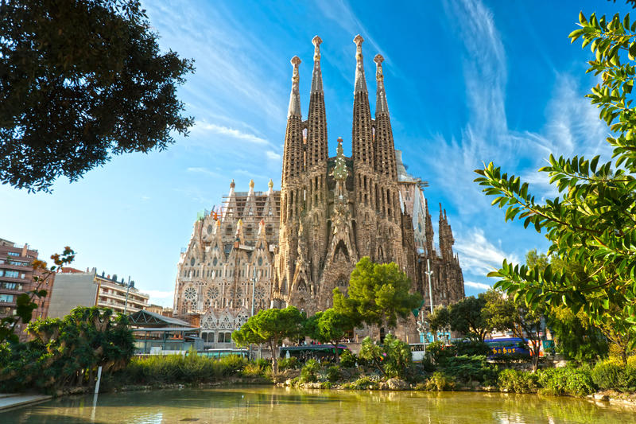

Barcelona
- Barcelona
- Retriever
- Spiderman New Universe
Barcelona
지중해 연안의 항구도시이며, 항만규모와 상공업 활동에 있어서는 에스파냐 제1의 도시이다.
교외지역을 포함한 바르셀로나는 비옥한 해안평야에 펼쳐져 있으며, 천연의 양항(良港)과 더불어 에스파냐 최대의 산업도시를 이룬다.
12세기에는 카탈루냐 백작과 아라곤 여왕의 결혼으로 아라곤 왕국이 이루어졌고, 바르셀로나는 그 수도로서 해운·수공업·금융의 중심으로서 번영하였으며, 14세기에는 그 절정에 달하였다.
이 무렵에 지어진 고딕식 대성당(13세기 말)을 비롯하여 역사적 건조물들이 구시가 중앙에 많이 남아 있으며, 당시의 바르셀로나의 해양법(海洋法)인 콘술라도 데 마르는 오랫동안 그 권위를 유지하였다.

2. 강아지
3. 영화 스파이더맨뉴유니버스
여행